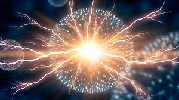

Atom fiziği, atomu bir bütün olarak atomların etkileşimlerini, atomun ve moleküllerin yapısı, enerji düzeyleri, dalga fonksiyonlari ve elektromanyetik geçişleri, atomlar arası bağlar, moleküler yapılar, atom modeli, atomik spektroskopide ince yapı ve aşırı ince yapı, spektroskopik gösterim ve enerji seviyeleri, geçiş olasılığı ve seçim kuralları, Zeeman olayı, Stark olayı, moleküler spektrum, iyonik bağlar, dönme, titreşim ve elektronik geçiş spektrumu, lazer gibi bölümleri- inceleyen fiziğin alt dallarından ikincisidir.
